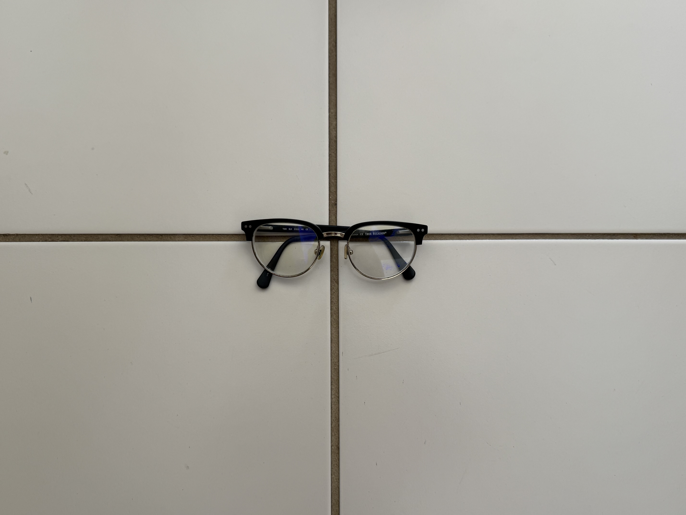
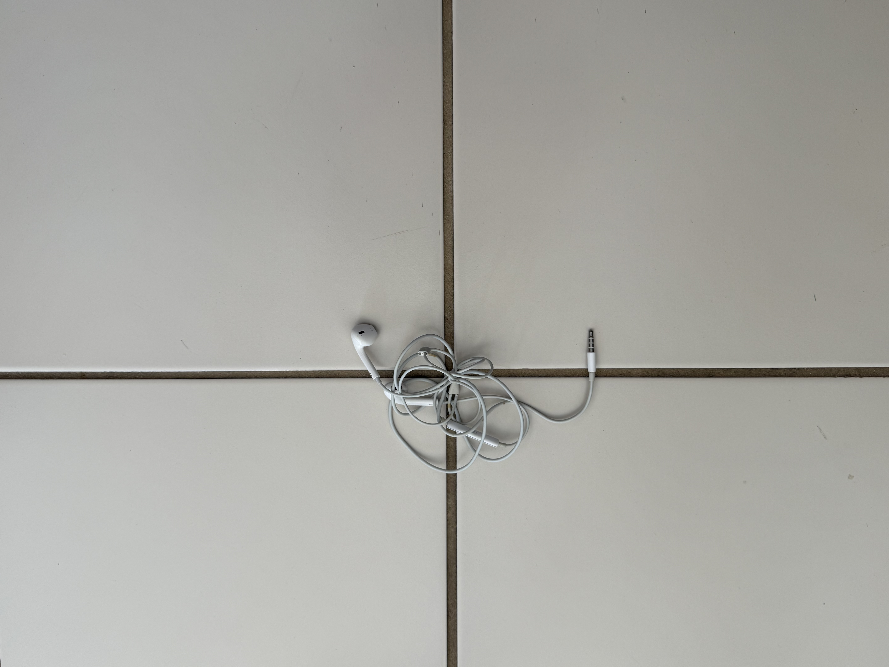
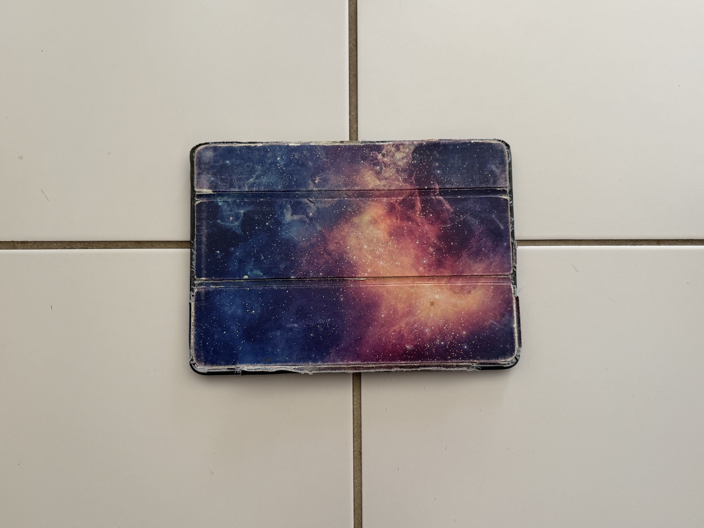
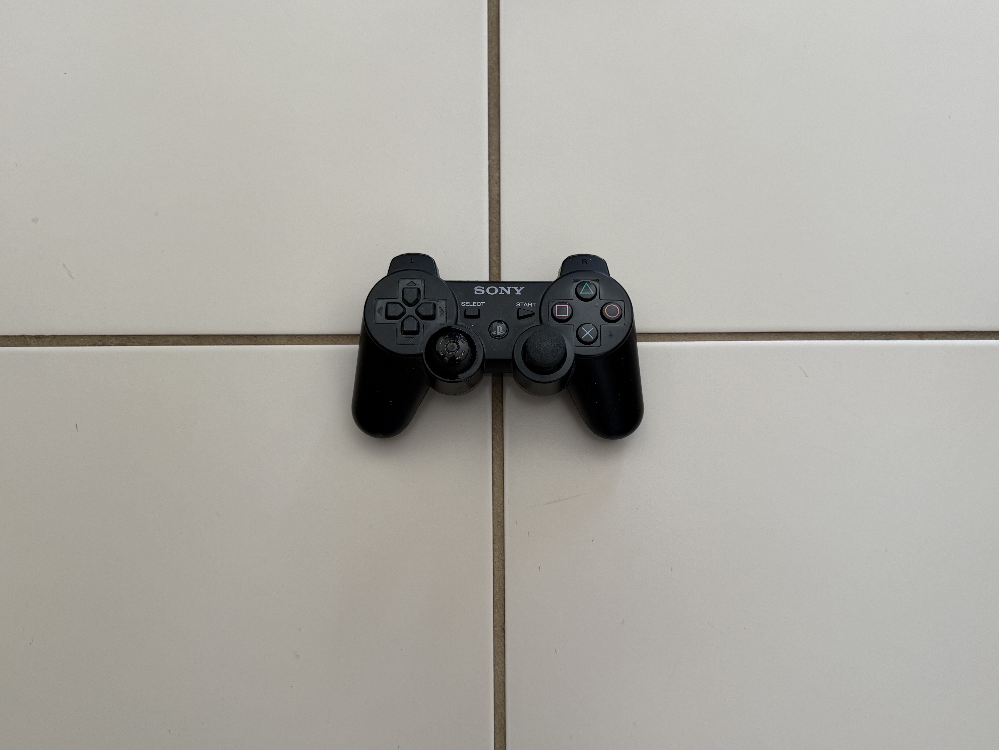
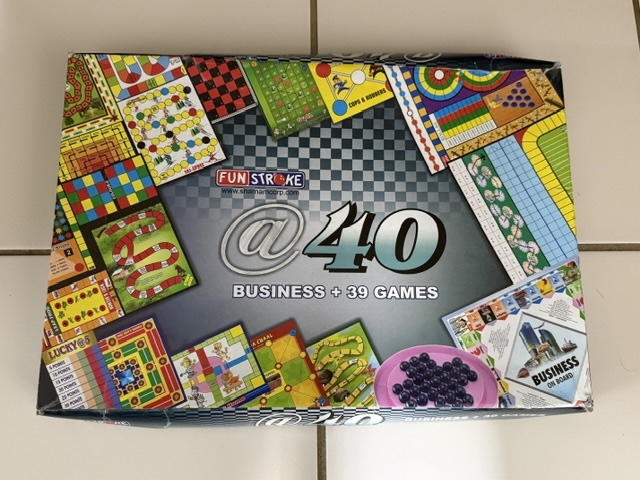
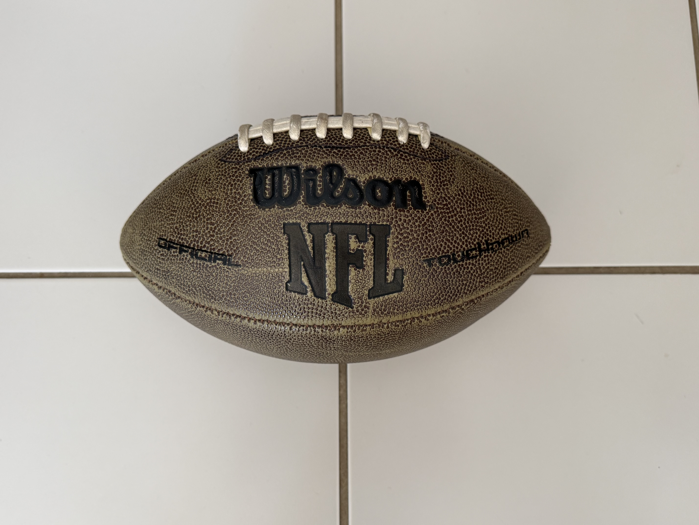
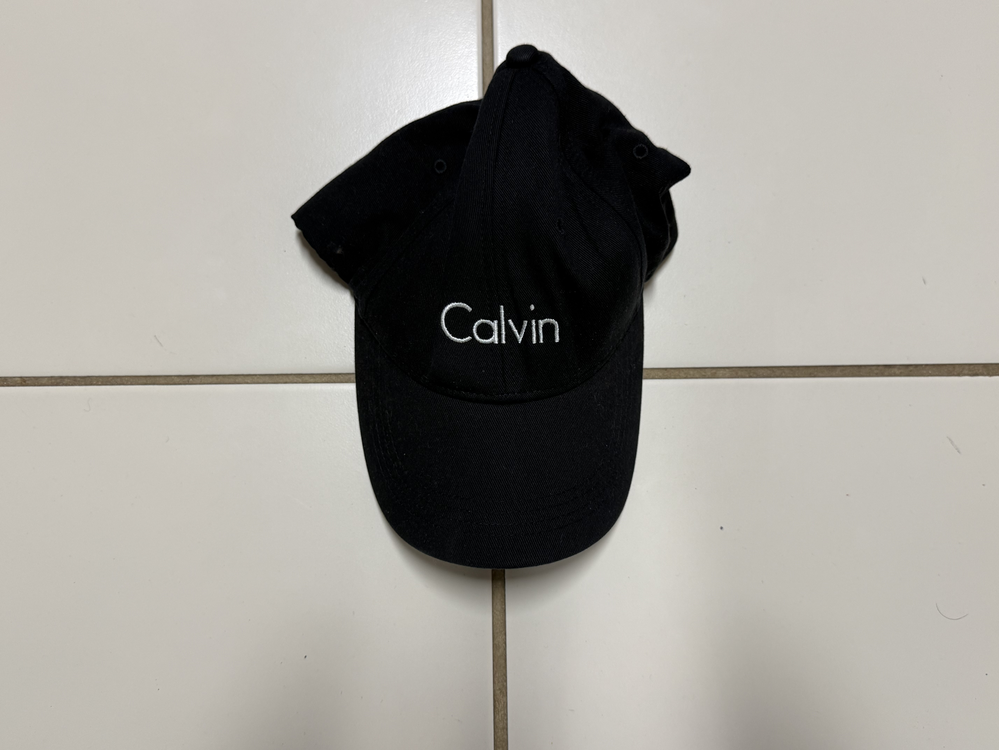
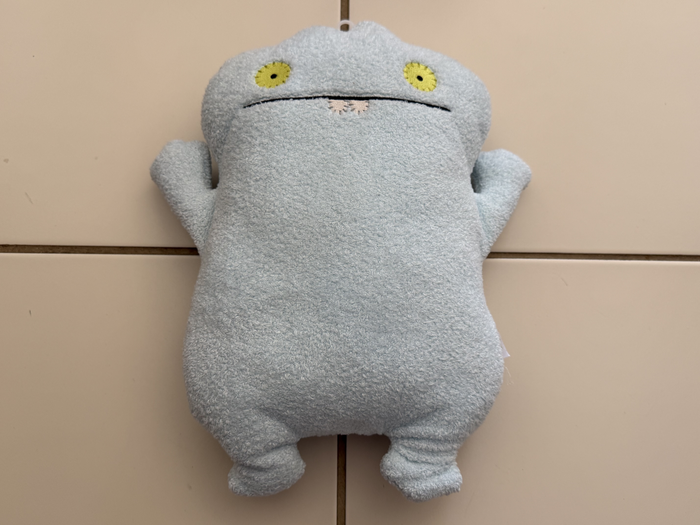
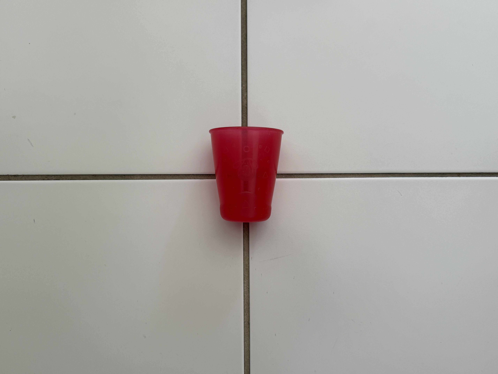

Week 100 – Items I Haven’t Valued in a Long Time
A week where my trash reminded me who I used to be
Preface: Why Haven’t I Already Let These Go?
This week, as I went through the things I was finally getting rid of, I realized how many of them had been sitting in the back of my closet or drawers for years. I didn’t keep them because I needed them, but because I wasn’t ready to let go of what they represented. Throwing something away is usually quick and automatic, but this week felt different. Each item I picked up brought back memories I hadn’t thought about in a long time. Reading Sarah Newman’s discussion of how trash can act like evidence has made me realize that these objects are basically a tiny “dig site” of my own life, not just clutter.
A lot of what I’m letting go of this week comes from earlier parts of my life. These weren’t objects I used recently, but they stayed with me quietly as I grew older. I think part of me knew they still mattered, even if I didn’t look at them often. Writing about them now feels like finally acknowledging that hidden value before moving on.
Overview: How These Items Ended Up Here
When I started choosing items to throw out this week, I noticed a clear pattern. I kept reaching for things that had been pushed aside but never fully forgotten. These were items that once had a lot of value in my life and slowly lost their everyday use, but not their meaning. I held onto them because I wasn’t ready to throw away the memories attached to them. Newman points out that what we call “waste” isn’t automatic or timeless, and that idea made me question why I labeled these as trash in the first place.
As I looked through everything, the items fell into three stages of my childhood. Each group connects to a different time in my life, and each one reminded me why I kept these things for so long. It also reminded me that sorting things into categories is a kind of decision making, the same way researchers and artists use objects to tell a story about a person or a place.
Everyday things I relied on
The first group includes my glasses, wired headphones, and iPad case, which connect to my later childhood, especially around middle school and the beginning of high school. These were items I used almost every day. The glasses are the pair I wore throughout my school days, and so many memories from that time are connected to them. Thinking about Deininger’s assemblages helped me notice how everyday objects can feel bigger than they are, because they carry the “shape” of a routine, just like these items did for me.
The iPad and its case were especially important because it was my first electronic device from my parents. I used it for schoolwork, watching videos, playing games with friends, and relaxing after long days. The wired headphones go along with that time too, I used them on bus rides, while doing homework, or whenever I needed music to calm myself down during stressful moments. These items are worn out now, but they represent a time when they were part of my daily routine. In a similar way, Muniz shows that discarded materials can still represent real experiences, and that’s exactly what these worn out items are doing for me now.
The fun side of growing up
The second group includes the football, controller, board game set, and hat, which connect to my teen age years of childhood during late elementary school and middle school. This group represents the fun part of growing up which includes playing outside, hanging out with friends, and doing activities with family. Newman describes how trash can reflect social life, and this group feels like proof of my “fun” habits: sports, games, and the people I spent time with.
The football reminds me of playing outside after school or just being active with friends. The controller and board game set bring back memories of game nights and spending time indoors with friends and family. Those years of having fun and not overthinking everything really stuck with me, and seeing these items again brought those memories back. The hat ties into this group because I used to wear it when we would go out and it was sunny, especially on trips, park days, or any outdoor activities. Muniz takes what people overlook and turns it into something you actually stop and look at, and looking at these items now its pulling back specific memories for me.
The little kid comforts
The final group goes back to my earliest childhood, around the years before and during kindergarten. This includes the stuffed toy and the cup. These were things I used to love as a little kid, and they were part of my everyday life back then. This part also connects to Newman’s point that there’s never a real “away,” because even when something is old, it can still stay present in how you remember it.
The stuffed toy reminds me of being attached to comfort objects when I was young. I used to keep it close, sleep with it, and carry it around because it made me feel safe. The cup was also one of my favorites as a child. I remember my mom telling me I would refuse to drink water unless it was from that specific cup. These items may look worn now, but they remind me of how simple things used to feel so important. Deininger talks about finding something meaningful in the mundane, and these comfort objects feel like the clearest example of that because they mattered before I could even explain why. They meant something to me long before I understood why.
Additional "trash"
As I worked on this project, I kept thinking about how other artists and researchers view what we throw away. Their writing and work helped me see that trash can tell stories about daily life, memory, and even culture. This week’s post is inspired by people who treat discarded objects as something worth studying, documenting, and rethinking.
Gallery: Nine Items from This Week









- Glasses
- Headphones
- iPad case
- Controller
- Board game set
- Football
- Hat
- Stuffed toy
- Cup
Item Data: A Table
| Item | Weight | Source | Location | Cost | Owned | Condition | Mode |
|---|---|---|---|---|---|---|---|
| Glasses | 30g | Vision Store | Bedroom | $100 | 7 years | Dirty and scratched | Recycle |
| Headphones | Light | Apple | Bedroom | $20 | 10 years | Damaged and ripped | Recycle |
| iPad case | 200g | Target | Bedroom | $15 | 12 years | Used and ripped | Recycle |
| Football | 400g | Prize | Garage | $20 | 13 years | Worn but still good for use | Donate |
| Controller | 200g | GameStop | Bedroom | $30 | 16 years | Broken and old | Recycle |
| Board game set | 800g | Target | Bedroom | $25 | 15 years | Old but still good and clean | Donate |
| Hat | 80g | Calvin Klein | Bedroom | $25 | 10 years | Used but in good condition | Donate |
| Stuffed toy | Light | Gift | Bedroom | $ | 20 years | Used and dirty but usable | Donate |
| Cup | Light | Target | Kitchen | $3 | 19 years | Scratched and dirty | Trash |
Key:
Coda
Thank you for coming along with me this week of trash disposal. I kept pushing these items back in my closet because I wasn’t ready to get rid of them, but looking back now, even though they hold memories for me, it’s time for me to move on and make new ones.
Some of these items are still good and can be useful to someone else, so I hope to donate what I can, and that some kid can make good memories as I did with them. Thanks again for reading and coming along with me on my trash disposal journey.